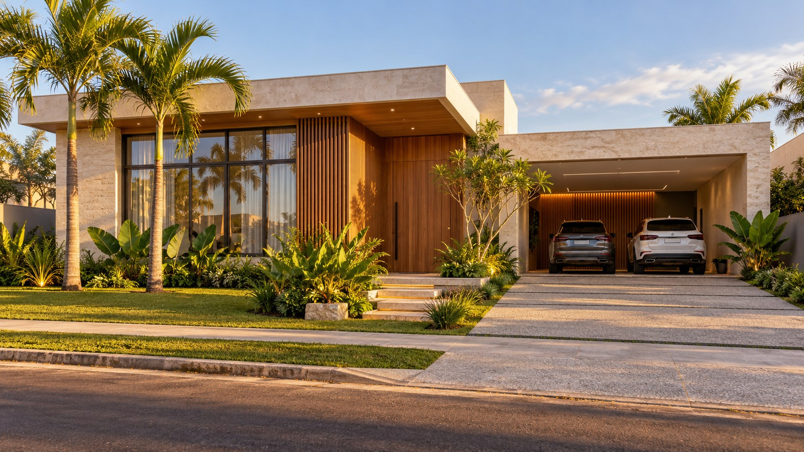
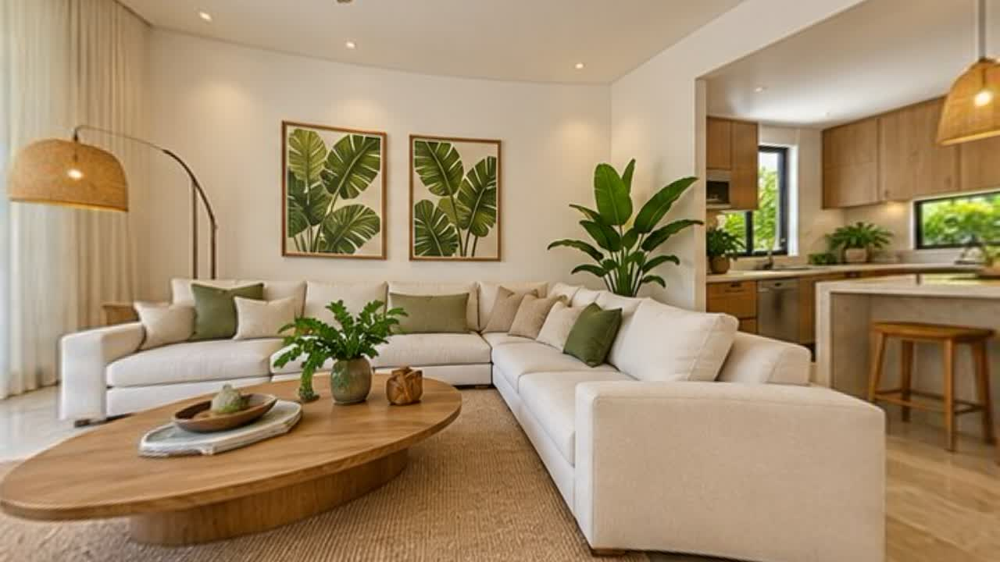

Encontre seu imóvel
Compare opções por bairro, espaço e valor. Guarde os favoritos para decidir com calma.
Explorar opções ↗
Encontre o seu lugar. Conheça cada detalhe.
Sinta-se em casa antes mesmo da primeira visita.
Casas para viver, apartamentos para recomeçar.
Explore nossa seleção demonstrativa.
Experimente outro bairro ou ajuste os filtros.

Sua próxima visita começa aqui.Olhe ao redor, passe da sala para a cozinha e explore a suíte, o banheiro e a área de lazer. Um jeito mais próximo de descobrir se esse é o seu lugar.
Um protótipo para experimentar como sua
imobiliária pode atender no digital.
Compare opções por bairro, espaço e valor. Guarde os favoritos para decidir com calma.
Explorar opções ↗Apresente o seu imóvel com uma galeria completa e uma experiência de visita virtual.
Experimente uma calculadora de parcelas com os valores e a taxa que você escolher.